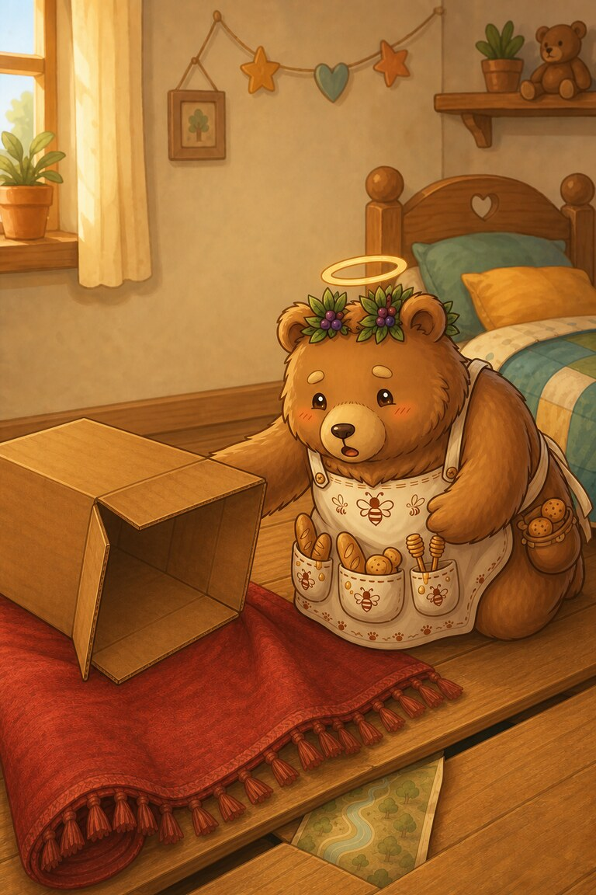
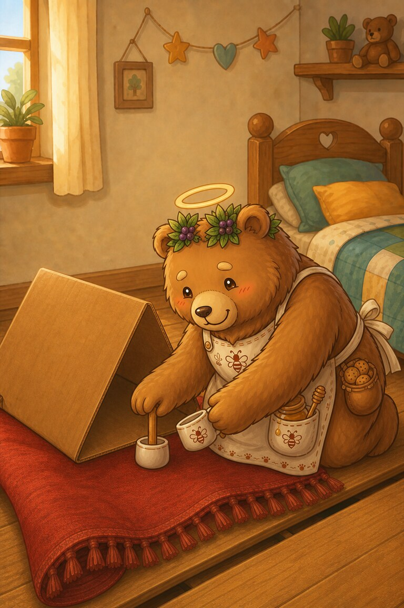
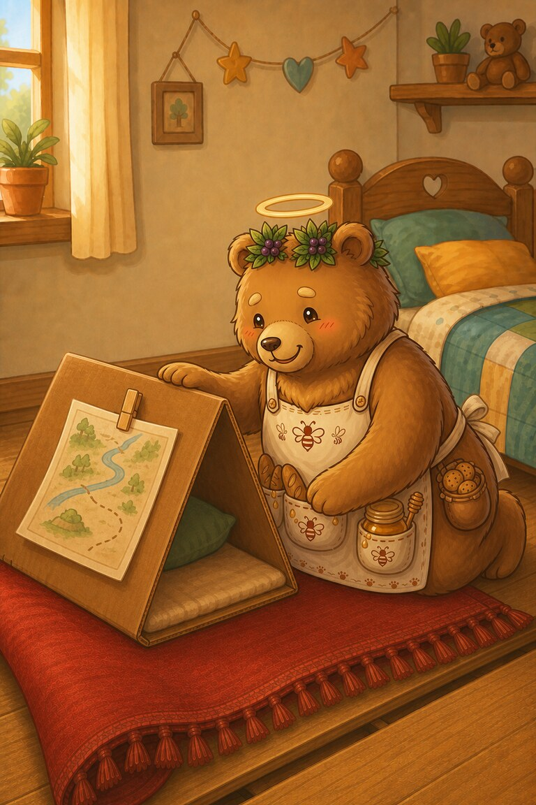
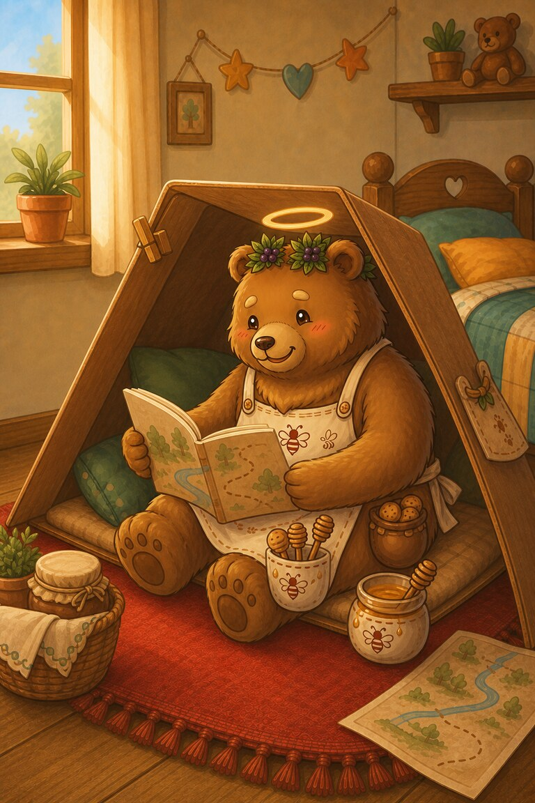

Page 1 of 5
Ted has a big box, a red rug, and a map. He will make a den by his bed.
A five-page den-building adventure for practising CVC short-vowel words.
Ted has a big box, a red rug, and a map. He will make a den by his bed.

He sets the box on top of the rug. It tips, and the map slips into a gap.

Ted gets a cup and a peg from his bag. The cup props up the box.

The peg clips the map to the den. Ted can sit on the rug and read it.

The small den is a snug spot. Ted grins: his odd kit did a big job.
A cup. Can you find another short-u word on page 3?
SnackPack Sentences & Spelling has a full Reading Trail, longer stories, word packs and eight literacy games.